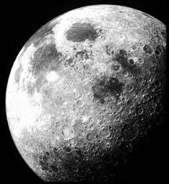

⭐Головна | 🌍Внутрішні планети | 🪐Зовнішні планети | ℹ️Про проект

Місяць — єдиний природний супутник Землі та п'ятий за розміром серед усіх супутників планет Сонячної системи. Середня відстань від Землі — 384 400 км.
Місяць проходить через 8 основних фаз, які повторюються кожні 29.5 днів. Ці фази визначаються відносним положенням Місяця, Землі та Сонця:
🌑 Новий місяць 🌒 Молодий місяць 🌓 Перша чверть 🌔 Прибуваючий
🌕 Повний місяць 🌖 Спадаючий 🌗 Остання чверть 🌘 Старий
місяць
Місяць був першим небесним тілом, на яке ступила людина. 20 липня 1969 року астронавти Ніл Армстронг та Базз Олдрін з місії Apollo 11 стали першими людьми, які висадилися на Місяць. Відтоді було здійснено численні місії, включаючи безпілотні зонди та орбітальні апарати.